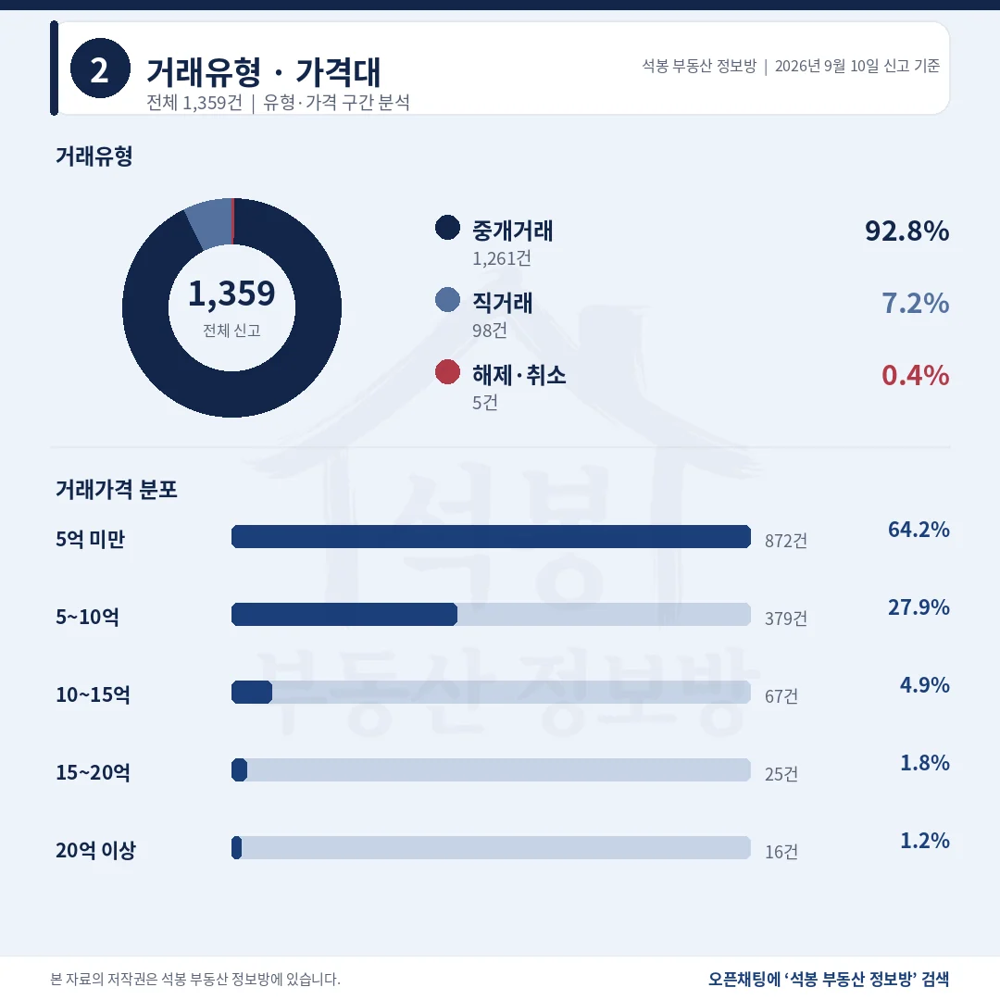
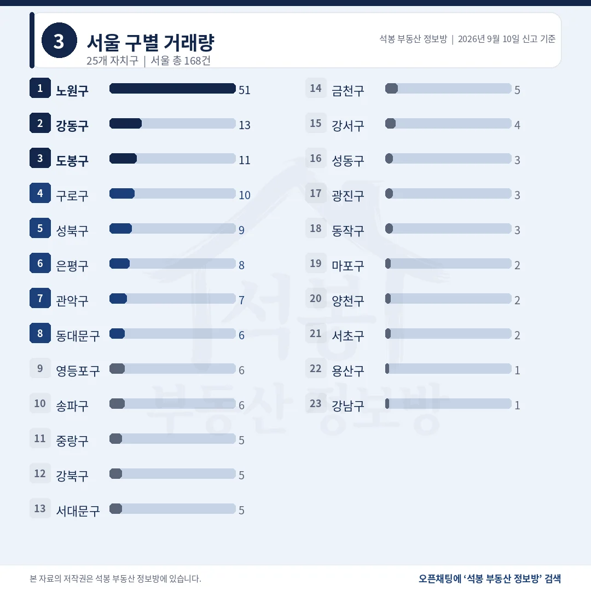
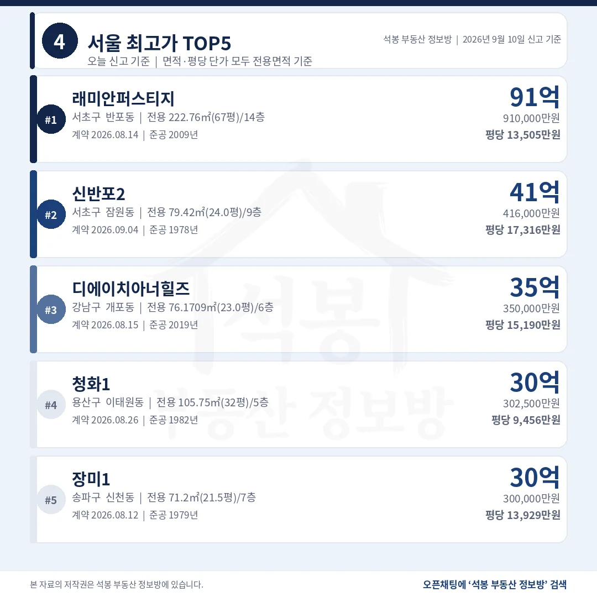
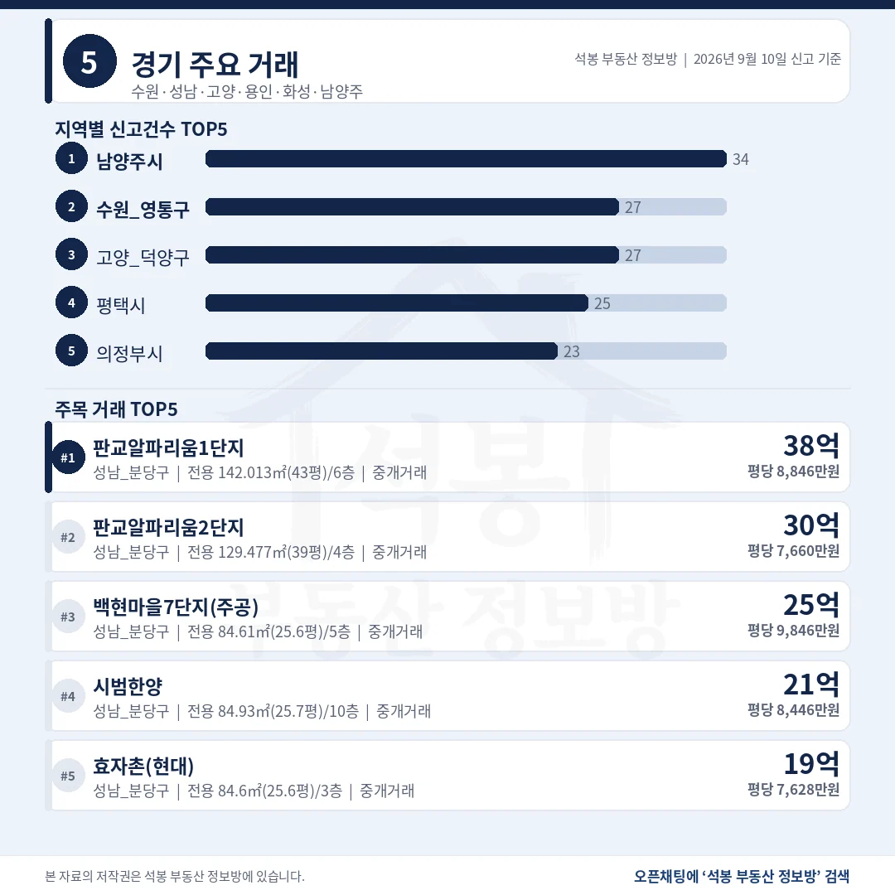
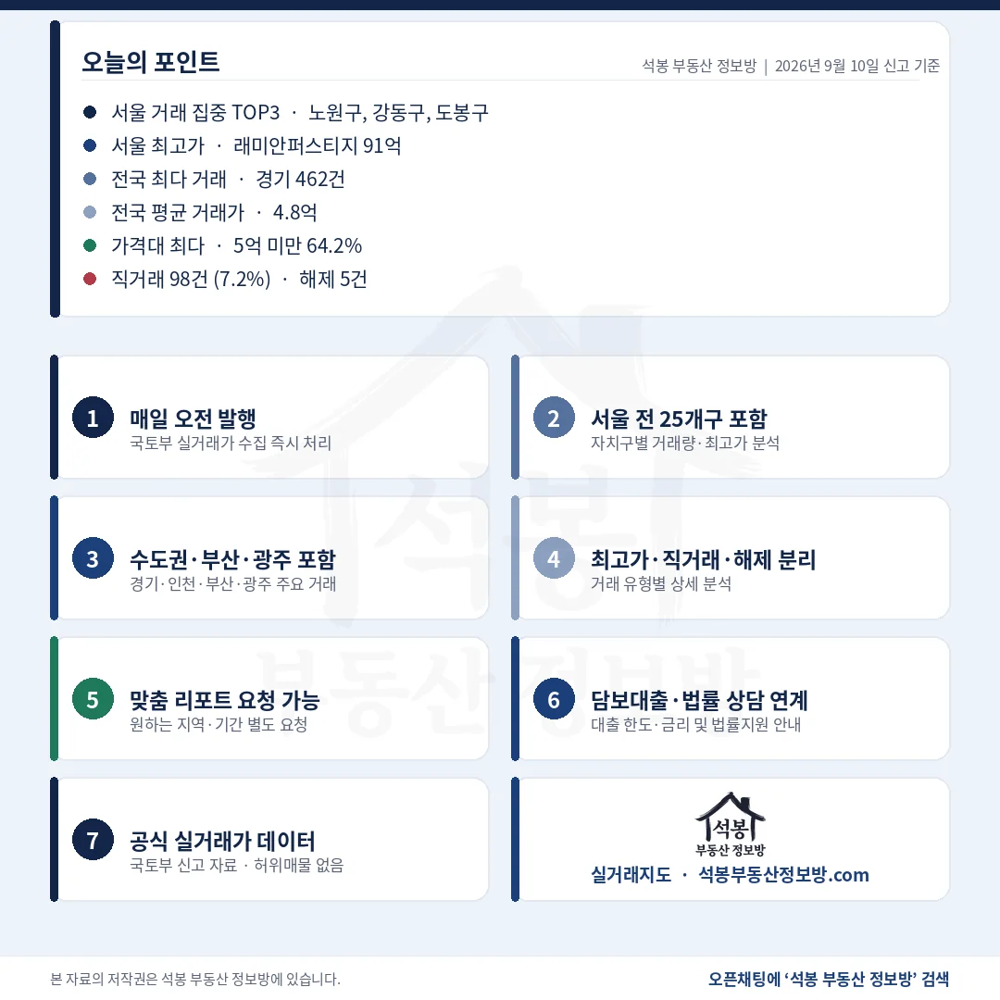

단지명을 누르면 그 단지의 실거래 내역과 시세를 바로 볼 수 있습니다. (면적과 평당 단가는 모두 전용면적 기준)
열에 아홉이 10억 아래, 전국 중위는 3.7억

거래유형·가격대
직거래 98건 가운데 95건이 개인끼리 한 거래입니다.
거래유형
건수
비중
중개거래
1,261건
92.8%
직거래
98건
7.2%
해제·취소
5건
0.4%
직거래에 쏠린 단지는 인천 간석동 도시형생활주택 4건이 최다입니다. 서울 직거래는 168건 중 4건뿐이었습니다.
가격대
건수
비중
5억 미만
872건
64.2%
5~10억
379건
27.9%
10~15억
67건
4.9%
15~20억
25건
1.8%
20억 이상
16건
1.2%
전국 중위 3.7억, 평균 4.8억입니다. 열에 아홉이 10억 아래에서 손바뀜했습니다.
여기서부터는 회원에게 보여드립니다
카카오 로그인 3초면 전문을 읽을 수 있습니다. 무료입니다.
가입하시면 지역 시장조사 보고서(약식)를 2회 무료로 요청하실 수 있습니다.
이미 회원이면 같은 버튼으로 로그인만 됩니다
노원구 51건이 서울의 30%, 강남3구는 다 합쳐 9건

서울 구별 거래량
수도권 727건으로 53.5%, 절반을 조금 넘겼습니다.
시도
신고
시도
신고
경기
462건
부산
79건
서울
168건
경북
65건
인천
97건
대구
50건
경남
96건
충북·충남
각 48건
경기 462건은 남양주 34건, 수원 영통·고양 덕양 각 27건 순입니다. 최다 단지가 3건이라 한 곳에 몰린 신고는 없습니다.
서울 자치구
신고
비고
노원구
51건
중위 6.1억 최다 단지 3건, 쏠림 없음
강동구
13건
중위 12.55억
도봉구
11건
중위 5.38억
구로구
10건
중위 8.80억
서초구
2건
중위 66.30억 건수는 최하위권, 값은 첫째
노원구 51건은 계약일이 8월 전체에 흩어져 있고 전부 개인 거래입니다. 노원을 빼면 서울 117건의 중위는 6.1억에서 9.28억으로 올라섭니다.
래미안퍼스티지 91억, 평당 1위는 41.6억 신반포2

서울 최고가 TOP5
1위는 전용 222.76㎡(67.4평) 대형이라 평당으로는 다섯 중 넷째입니다.
단지
위치
거래가
전용면적
평당(전용)
1 래미안 퍼스티지
서초 반포동
91.0억
222.8㎡ (67.4평)
13,505만 2009년
2 신반포2
서초 잠원동
41.6억
79.4㎡ (24.0평)
17,316만 1978년
3 디에이치 아너힐즈
강남 개포동
35.0억
76.2㎡ (23.0평)
15,190만 2019년
4 청화1
용산 이태원동
30.2억
105.8㎡ (32.0평)
9,456만 1982년
5 장미1
송파 신천동
30.0억
71.2㎡ (21.5평)
13,929만 1979년
다섯 건 모두 개인끼리 한 중개거래입니다. 2위 신반포2는 1위의 3분의 1 크기인데 평당으로는 3,811만원 더 비쌉니다.
경기 상위 다섯 건이 모두 분당, 광주 1위는 7.7억

경기/인천/부산/광주
경기 462건 중 값 상위 다섯 자리를 분당구가 독차지했습니다.
지역
신고
최고가 단지
거래가
평당(전용)
경기
462건
분당 백현동 판교알파리움 1단지
38.0억
8,846만
인천
97건
연수 송도동 더샵센트럴 파크2
19.1억
4,310만
부산
79건
해운대 좌동 해운대케이씨씨 스위첸
12.6억
3,244만
광주
37건
남구 봉선동 금호2
7.7억
1,723만
경기 1위 판교알파리움1단지는 전용 142.0㎡(43.0평), 인천 1위 더샵센트럴파크2는 전용 146.5㎡(44.3평)입니다. 지역 중위는 경기 4.86억, 인천 3.65억, 부산 3.15억, 광주 2.19억입니다.
20억 위 16건, 서울 밖은 분당 네 건이 전부입니다

구간
서울
경기
그 밖
10억 이상 108건
56건
39건
13건
15억 이상 41건
25건
14건
2건
20억 이상 16건
12건
4건
0건
20억 위 경기 4건은 백현동 셋과 서현동 하나로 전부 분당구입니다. 15억 위 그 밖 2건은 인천 송도동입니다.
9월 10일 숫자에서 눈여겨볼 곳은 노원구입니다. 서울 168건 중 51건, 열에 셋이 한 자치구에서 나왔습니다. 공공기관 일괄 매입이나 한 단지 쏠림이 아닌지 확인했는데, 최다 단지가 보람아파트 3건이었고 계약일도 8월 내내 흩어져 있었습니다. 51건 전부 개인이 산 거래입니다.
같은 날 강남구는 1건, 서초구는 2건이었습니다. 그 2건이 91.0억과 41.6억이라 서초구 중위가 66.30억으로 찍혔습니다.
노원을 빼고 다시 세면 서울 중위는 6.1억에서 9.28억으로 올라섭니다. 같은 도시의 통계인데 어느 구를 빼느냐로 체감이 달라집니다.
표 보는 법 · 직거래는 중개사를 끼지 않고 당사자끼리 한 거래입니다. 면적과 평당 단가는 모두 전용면적 기준이고, 평은 ㎡를 3.3058로 나눈 값입니다. 중위 거래가는 그 지역 거래를 금액순으로 줄 세웠을 때 한가운데 값이라 평균보다 체감에 가깝습니다. 건수와 비중은 해제·취소를 포함한 전체 신고 기준이고, 중위·평균만 해제·취소를 빼고 계산했습니다.
원자료: 국토교통부 실거래가 공개시스템 (2026년 9월 10일 신고분 기준) · 편집·제작: 석봉 부동산 정보방 · 신고분은 계약일과 신고일이 다를 수 있으며 해제·취소 건이 뒤늦게 반영될 수 있습니다 · 본 자료는 정보 제공 목적이며 투자 권유가 아닙니다.